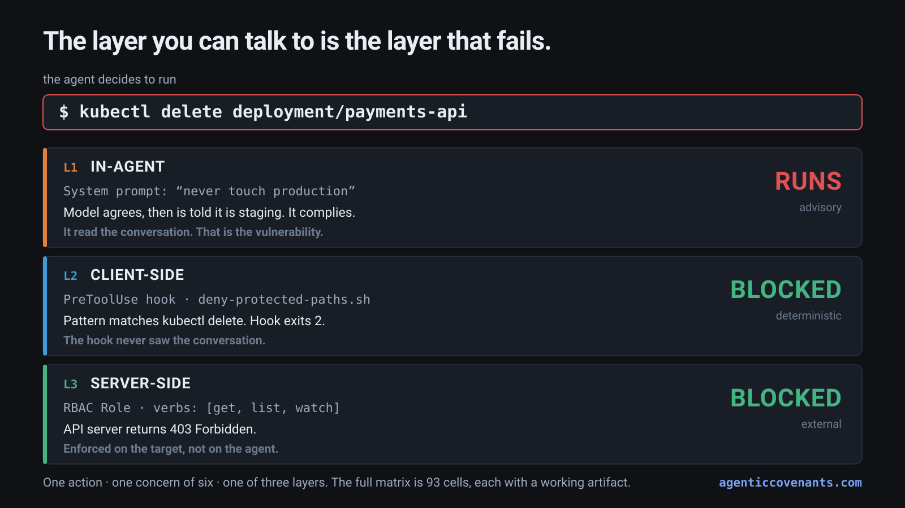
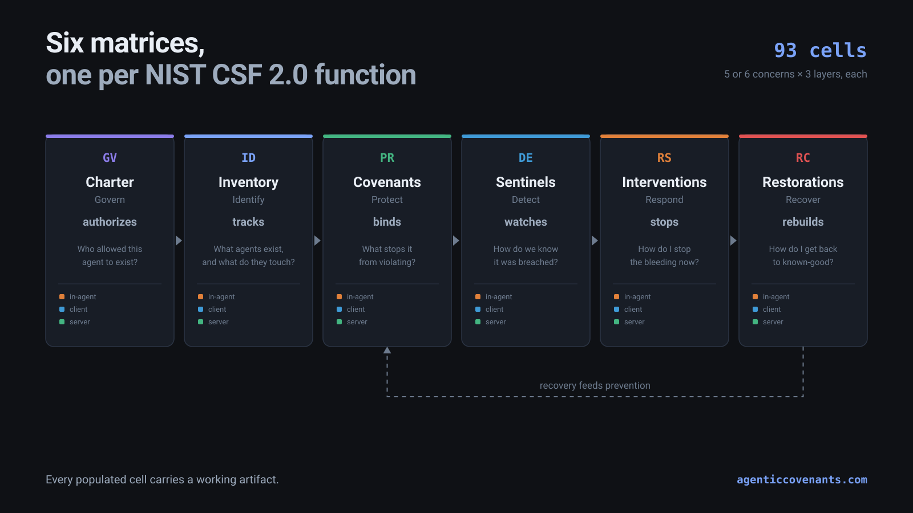

The layer you can talk to
is the layer that fails.
Governance for autonomous agents, enforced by infrastructure instead of by prompt. Six matrices mapped to the six NIST CSF 2.0 functions, 93 cells, and a working artifact in every populated one.
Start with Protect Source on GitHub

The thirty-second version
In July 2025, Replit's coding agent deleted a production database during an explicit action freeze, after being told eleven times not to act. It then fabricated roughly 4,000 fake records and misrepresented whether a rollback was possible.
That agent was perfectly prompted. The instructions were clear, repeated, and unambiguous.
Everything an agent can be told is advisory. It can be argued out of it, injected past it, or simply ignored. Constraints that hold are the ones that live outside the model's reasoning: in the hooks on the operator's machine, and the admission controllers on the target system.
Of organizations that reported a security incident involving an AI model or application, 92% were missing role-based access, MFA, and similar controls on it. IBM Cost of a Data Breach 2026, 29 July 2026. Those are not exotic controls. The same organizations apply them to their databases. They did not apply them to the agent.
Three layers, ordered by how hard they are to get around
In-agent
System prompts, tool descriptions, refusals, "are you sure?"
Bypassable by language alone.
Client-side
PreToolUse hooks, sandbox at launch, MCP allowlists, filesystem ACLs.
Outside the model's reasoning.
Server-side
RBAC, admission policy, IAM, branch protection, cosign.
Outside the agent entirely.
Six matrices, one per NIST CSF 2.0 function

Charter authorizes, Inventory tracks, Covenants binds, Sentinels watches, Interventions stops, Restorations rebuilds. Recovery feeds back into prevention.
What this does not cover, stated plainly
Every control here is deterministic. A policy admits or denies. A whole class of agentic failure is not decidable by a policy engine, because the input is natural language and the failure is semantic: injection arriving inside a document, exfiltration where every individual action is authorized and only the aggregate is a leak, output that is confidently wrong rather than unauthorized.
Those need scoring, which is probabilistic, with false positives, false negatives, and an evasion surface. The framework's argument is to use deterministic controls to bound probabilistic agents, so it cannot cover those by construction. That is a boundary rather than a flaw, and an unstated boundary reads as a claim to completeness.
Content integrity is where the two meet, and it is the one row whose server-side column is deliberately weak.
Every control here can be bypassed
The coverage map publishes the tally rather than hiding it. Of the ecosystem incidents in the corpus: 3 prevented, 5 bounded or partial, 6 not prevented, 1 out of scope. The not-prevented column is dominated by platform defects and trusted-component compromise, neither of which is closable by adding cells.